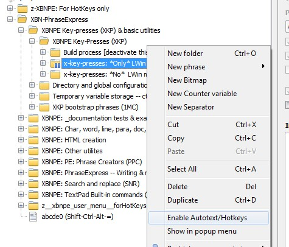
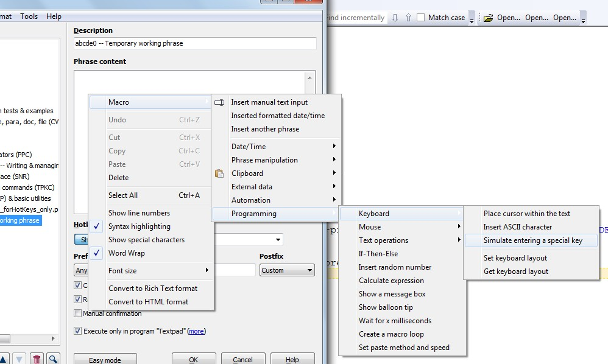

[BACK] (XBN-PhraseExpress is released under the LPGL 2.1)
An XBNPE-key-press (XKP) is a wrapper for a normal PhraseExpress key-press. An "xbn-key-press" or "x-key-press" provides for code that is both easier to read, and can be easily debugged by changing its execution speed at any time. Since the 'insert' tag does not allow for the '-count' parameter, the XKP project only provides for individual key-presses (zUP and not zUP3).
An x-key-presses can be modified in any manner, using 'CTRL', 'ALT', 'SHIFT', and, optionally 'LWIN' or 'RWIN'. For example:
zCSpUP
which is equivalent to
{#CTRL {#SHIFT {#UP}}}{#insert zTSlp}
For a listing of all available keys, see 'xhcckp'. For administrator (build) related processes for XKP project, see 'xhcck'.
Contents:
[go] Detailed example: zUP[go] XKP build process[go] TextPad-bootstraps required by the XBNPE-XKP project[go] "Raw" PhraseExpress key-pressesSource (indented):
{#insert zROOT_DIR_XBNPE_MAIN}\textpad__tpkc\non_bootstrap_utils\z_phrase_creator_ddmenus\xkp__pcddmenu.txt
Output (unindented):
{#insert zROOT_DIR_XBNPE_MAIN}\textpad__tpkc\non_bootstrap_utils\z_phrase_creator_ddmenus\z_temp_folder_for_unindenting_ddmenus\xkp__pcddmenu.px.txt
[top] XBNPE-Key-Presses: Detailed example: zUPThis document describes a single x-key-press, zUP, in detail. For all available x-key-presses, see'xhokpk'.
[back] [PREV, NEXT] XKP: No modifiers: zUP| X-Key-Press | Equivalent to the "raw"
PhraseExpress key-press |
Example raw-key-press
phrase-creators |
zUP |
{#UP}{#insert zTSlp} |
krk, 'UP'
Or lur |
(Note that these example phrase-creators are for printing the raw key-press, not the x-key-press, nor the following 'zTSlp'.)
zTSlpThe only difference between an x-key-presss and a default PhraseExpress key-press, is the call to zTSlp that ends each x-key-press. This call is what enables you to slow down all XBN-PhraseExpress code, on demand, for diagnostic or demonstration purposes. In normal circumstances, this zTSlp phrase does not exist, and therefore its overhead is minimal.
(This zTSlp phrase is more like a variable phrase-type than a command, in that it is only dynamically-created, and when it does exist, it resides in the 'cctv_folder'-autotexted folder, and also that it is destroyed every time zKeyPressFast is called [by setting its value--its '-content' parameter to nothing]. However, its name and purpose is more like a command than a variable: Where a command normally does something, a variable is normally just a holder for a discrete and static string.)
[back] [PREV, NEXT] XKP: One modifier: z?pUP| X-Key-Press | Equivalent to | Example raw-key-press
phrase-creators |
zCpUP |
{#CTRL {#UP}}{#insert zTSlp} |
krkc, 'UP'
Or, with '{#UP}' in the clipboard: krxc, paste |
zApUP |
{#ALT {#UP}}{#insert zTSlp} |
krka, 'UP' |
zSpUP |
{#SHIFT {#UP}}{#insert zTSlp} |
krks, 'UP' |
zLpUP |
{#LWIN {#UP}}{#insert zTSlp} |
krkl, 'UP' |
LWIN modifiers are disabled by defaultAll LWIN modifiers are unavailable by default. To optionally enable them, right click on
XBN-PhraseExpress/XBNPE Key-presses (XKP) & basic utilities/XBNPE Key-presses (XKP)/x-key-presses: *Only* LWin modifiers
and check
Enable Autotext/Hotkeys
(as shown in the below screenshot). If RWIN modifiers are needed, follow these steps. When 'LWIN' (and/or 'RWIN') modifiers are not needed, this branch--which contains more than 700 phrases--should be disabled.

[back] [PREV, NEXT] XKP: Two modifiers: z??pUP| X-Key-Press | Equivalent to | Example raw-key-press
phrase-creators |
zCApUP |
{#CTRL {#ALT {#UP}}}{#insert zTSlp} |
krkca, 'UP'
Or, with '{#UP}' in the clipboard: krxca, paste |
zCSpUP |
{#CTRL {#SHIFT {#UP}}}{#insert zTSlp} |
krkcs, 'UP' |
zCLpUP |
{#CTRL {#LWIN {#UP}}}{#insert zTSlp} |
krkcl, 'UP' |
zASpUP |
{#ALT {#SHIFT {#UP}}}{#insert zTSlp} |
krkas, 'UP' |
zALpUP |
{#ALT {#LWIN {#UP}}}{#insert zTSlp} |
krkal, 'UP' |
zSLpUP |
{#SHIFT {#LWIN {#UP}}}{#insert zTSlp} |
krksl, 'UP' |
When modifiers are used, they must be in order:
CTRL: 'C'ALT: 'A'SHIFT: 'S'LWIN: 'L'[back] [PREV, NEXT] XKP: Three & four modifiers: z???pUP| X-Key-Press | Equivalent to | Example raw-key-press
phrase-creators |
zCASpUP |
{#CTRL {#ALT {#SHIFT {#UP}}}}{#insert zTSlp} |
krkcas, 'UP'
Or, with '{#UP}' in the clipboard: krxcas, paste |
zCALpUP |
{#CTRL {#ALT {#LWIN {#UP}}}}{#insert zTSlp} |
krkcal, 'UP' |
zCSLpUP |
{#CTRL {#SHIFT {#LWIN {#UP}}}}{#insert zTSlp} |
krkcsl, 'UP' |
zASLpUP |
{#ALT {#SHIFT {#LWIN {#UP}}}}{#insert zTSlp} |
krkasl, 'UP' |
zCASLpUP |
{#CTRL {#ALT {#SHIFT {#LWIN {#UP}}}}}{#insert zTSlp} |
krkcasl, 'UP' |
'RWIN' modifiersBy default, 'LWIN' modifiers are installed-but-disabled. 'RWIN' modifiers are not installed. To install them, follow these steps:
LWIN branch, by right-clicking on
XBN-PhraseExpress/XBNPE Key-presses (XKP) & basic utilities/XBNPE Key-presses (XKP)/x-key-presses: *Only* LWin modifiers
'Duplicate'.'LWIN' --> 'RWIN','Lwin' --> 'Rwin', and'Lp' --> 'Rp'.To reiterate, there are more than 700 phrases in this (new) branch. For efficiency, it should be disabled unless needed.
Warning: The key-press phrase-creators in the PCC project do not recognize the RWIN modifier.
buildxkpEquivalent to zBuildAllXKPPhrasesWTypePromptActual
Builds the entire XKP-project. This is a "live" build of all keys. Its output must be imported into PhraseExpress, replacing any and all phrases existing in
XBN-PhraseExpress/XBNPE Key-presses (XKP) & basic utilities/XBNPE Key-presses (XKP)/x-key-presses: *No* LWin modifiers
and, if LWIN modifiers are selected,
XBN-PhraseExpress/XBNPE Key-presses (XKP) & basic utilities/XBNPE Key-presses (XKP)/x-key-presses: *Only* LWin modifiers
Before running this, it is expected that all files are deleted from
zXPROOT_DIR_AG_xkpOutputRoot
and all its sub-directories (do not delete any directories).
At the beginning of this process, you are asked if LWIN modifiers should also be built.
buildxkptestEquivalent to zBuildAllXKPPhrasesWTypePromptTestOnly
The same as "live", with only two characters built per "category" (two numbers, two letters, etc.). Use this for diagnostics and demonstration of the build process.
[top] XBNPE-Key-Presses: Required TextPad-bootstrapsThe XKP project--and therefore the entirety of XBN-PhraseExpress--requires the following TextPad-bootstraps to exist before installation.
^(EditCopy|EditCut|EditDupLine|FileClose|FileNew|FileSave|DocumentStart|WordRightEnd|EditPaste|SelectAll|WordLeftExtend|WordRightEndExtend|ToggleWordWrap)\bxhcck)zTestAllXKPTextPadBootstrapstesttpbsxkp{#insert zXPROOT_DIR_xbnpeXkp}xkp_bootstrap_phrases\xkp_btstrp__textpad__built_in_cmds\tp_bootstraps_for_xkp_project.px.txttp_bootstraps_for_xkp_project_esc_tpk.px.txtXBN-PhraseExpress >
XBNPE Key-presses (XKP) & basic utilities >
XKP bootstrap phrases (1MC) >
TextPad-bootstraps: Built-in commands| Phrase name | Built-in command name | Category | Description |
zTPCopy |
EditCopy |
Edit |
Duplicates the currently-selected text into the clipboard |
zTPCut |
EditCut |
Edit |
Moves the currently-selected text |
zTPDupLine |
EditDupLine |
Edit |
Duplicates the current line (does not copy) |
zTPFileClose |
FileClose |
File |
Closes the current file. If unsaved, asks you to save or discard changes, or cancel the close process. |
zTPFileNew |
FileNew |
File |
Opens a new document |
zTPFileSave |
FileSave |
File |
Saves the current document. If unsaved, pops open the "Open file(s)" dialog. |
zTPGTDocTop |
DocumentStart |
Cursor |
Move the cursor to line one, column zero. |
zTPMoveR1w |
WordRightEnd |
Cursor |
Move the cursor to just after the final character of the non-whitespace word, closest to its right. |
zTPPaste |
EditPaste |
Edit |
Write the value of the clipboard to the current document, replacing any selection. |
zTPSelectAll |
SelectAll |
Selection |
Select all text in the document. |
zTPSelectL1w |
WordLeftExtend |
Cursor |
Increase the current selection so it includes the non-whitespace word closest to the left of the cursor/current-selection (there may be whitespace between the cursor/current-selection, and the left-word), through its first character. |
zTPSelectR1w |
WordRightExtend |
Cursor |
Increase the current selection so it includes the non-whitespace word closest to the right of the cursor/current-selection (there may be whitespace between the cursor/current-selection, and the right-word), through its final character. |
zTPToggleWW |
ToggleWord |
Configure |
Toggle's "word-wrap" state. |
[top] "Raw" PhraseExpress key-pressesAs in the detailed example, the x-key-press
{#insert zUP}
is equivalent to the "raw" PhraseExpress key-press, followed by a call to zTSlp:
{#UP}{#insert zTSlp}
To obtain a specific "raw" PhraseExpress key-press:
Alt+PMacro > Programming > Keyboard > Simulate entering a special key
[OK], and the "raw" PhraseExpress key-press is printed to the phrase's body."kr..." phrase-creators in the XBNPE-Phrase-creator (PCC) project